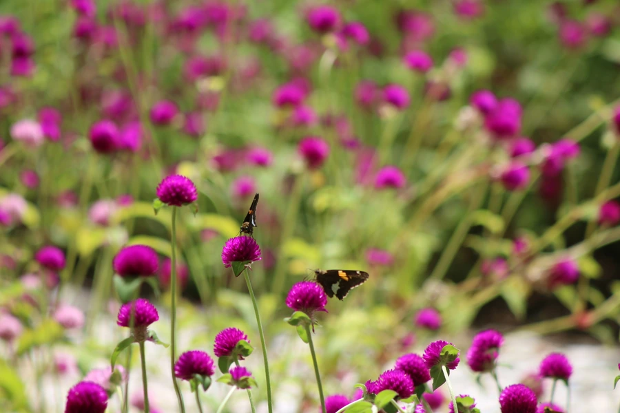

花卉与草本 · 植物界
千日红 Gomphrena globosa

苋科一年生草本，圆球状花序紫红或粉白，干燥后长期不褪色，是著名的干花材料，原产热带美洲，也常作花坛镶边。
- 分类
- 门被子植物门纲木兰纲目石竹目科苋科属千日红属
- 栖息环境
- 热带美洲的向阳草地与田边，喜温暖、干燥、阳光充足
- 地理分布
- 原产热带美洲，现世界温暖地区广泛栽培，中国南北均有种植
- 保护级别
- 暂无评估
物种志
千日红为苋科千日红属一年生草本，株高 20–60 厘米，茎直立，多分枝，全株被白色柔毛。叶片对生，长椭圆形，表面粗糙。头状花序球形或长圆形，直径 2–3 厘米，由多数膜质小花的苞片组成，有紫红、粉、白等色，花期 7–10 月；果实为胞果。
千日红原产热带美洲，喜温暖、阳光充足和干燥的环境，不耐寒、怕积水，对土壤要求不严。它的花被片为膜质，干燥后颜色和形态能保持很久，因此得名“千日红”，是制作干花和花环的常用材料；花序也可泡茶，民间认为有平肝明目之效。栽培以春播为主，生长期适当摘心可促发分枝、增加花量，花后及时剪除残花还能再开一茬。
形态与习性
- 株高20–60 厘米，茎多分枝
- 花期7–10 月，球状花序
- 果期9–11 月，胞果
- 光照喜充足阳光
- 水分耐旱，忌积水
- 土壤疏松、排水良好的壤土
- 繁殖以播种为主
- 主要用途花坛观赏、干花制作、花序泡茶
趣味知识
- 千日红的花被片为膜质，干燥后仍能长期保持颜色，因此得名。
- 它的圆球状花序由许多小花组成，实际是一团密集的苞片和小花。
- 千日红是制作干花和花环的常用材料，剪下倒挂阴干即可。
- 花序晒干后可泡茶，民间认为有平肝明目之效。